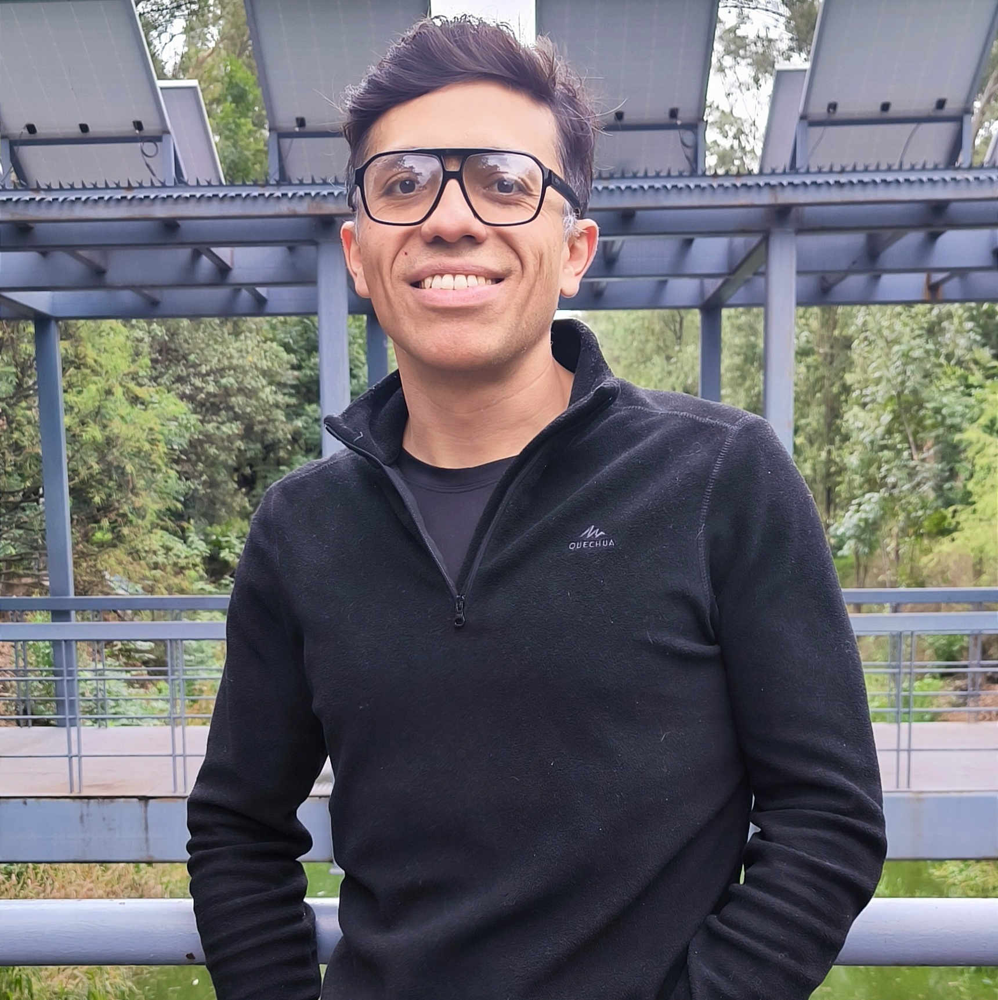

Textbooks
- Author of Problemas Éticos Contemporáneos and other textbooks for Hachette Editorial México / Patria Educación, 2026. Indautor page.
- Lógica Básica: in progress, but already well advanced.
Metaphysics · Philosophy of science · Philosophy of logic

My main research project examines the role of spaces of possibility in scientific explanation. Physics, economics, and other sciences represent systems by means of state spaces, admissible trajectories, symmetries, optimisation landscapes, and counterfactual dependencies. The ontological problem is to explain how these modal structures can be objective without positing an ontology of worlds or merely possible entities.
I am also interested in questions concerning the notion of structure in the sciences, as well as ontological problems surrounding emergence and complexity.
Revista de Humanidades de Valparaíso, 25: 91–111.
With Aldo Filomeno and José Jerez. Revista de Humanidades de Valparaíso, 25: 3–18.
With Edouard Machery, Stephen Stich, and others. Oxford Studies in Experimental Philosophy, 3: 158–174.
With Edouard Machery, Stephen Stich, and others. Noûs, 53(1): 224–247.
I have taught undergraduate and postgraduate courses at UAM-Cuajimalpa, UNAM, the Pontificia Universidad Católica de Valparaíso, and El Colegio de México. My principal teaching areas are logic, metaphysics, philosophy of science, contemporary philosophy, and argumentation.
I have also designed and taught professional-development courses for upper-secondary teachers and developed materials for in-person and online education.
Guest editor of the special issue of Crítica on the metaphysical foundations of physics, with contributions by Tim Maudlin, Valia Allori, and Gustavo E. Romero.
I produce Spanish-language materials on logic, metaphysics, and argumentation. For example, see my YouTube channel.
For academic correspondence, invitations, or collaboration proposals: carlos.a.romero.c@icloud.com.
Beyond philosophy, my interests include photography, architecture, museums, travel, cooking, mountaineering, and urban life. Here is a small selection of photographs I have taken.